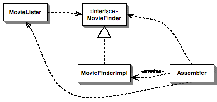

Spring Framework
tvorba obchodních
aplikací v Javì bez J2EE
- Firma Sun Microsystems dodává ji¾ nìkolik let
programovou platformu J2EE (Java 2 Enterprise Edition). Jedná
se o standardizovanou distribuovanou komponentovou technologii
doplnìnou o mnoho knihoven a API, které jsou potøebné
pøi tvorbì enterprise aplikací. Jedná se zejména
o technologie Servlet, JSP/JSF, JNDI, JTA, JMS a webové
slu¾by. Jádro tvoøí komponentová technologie,
kterou si pøedstavíme.
Enterprise JavaBeans
- Nejprve je nutno osvìtlit, co je to vlastnì enterprise aplikace
– jedná se o softwarovou aplikaci, kterou firma
vyvinula, zakoupila nebo pøevzala, poskytující
strategické slu¾by dané firmì. Mù¾e se jednat o
podnikové libovolné procesy (úèetnictví,
sklad), ERP (Enterprise Resource Planning – plánování
a správa výrobního procesu), CRM (Customer
Relatationship Management – správa vztahu se
zákazníky). Tento pojem nevymyslela firma Sun, ale je
zde ji¾ øadu let. Døíve byly tyto aplikace úzce
svázány s mainframy a napøíklad jazykem
Fortran.
-
EJB jsou komponenty, které se nasazují na aplikaèním
serveru (tzv EJB kontejneru) poskytujícím bezpeèné
a spolehlivé prostøedí nutný pro jejich bìh.
Tyto komponenty jsou dostupné a instalovatelné pøes
sí» a jejich úlohou je poskytovat nástroj pro
tvorbu enterprise aplikací. Jen pøipomenu, ¾e softwarová
komponenta má, na rozdíl od obyèejné tøídy
(napø. v jazyce Java), jasnì dané rozhraní, explicitnì
dané závislosti na jiných komponentách a
musí být mo¾né ji nasadit nezávisle jako
produkt tøetí strany.
-
Komponenty je mo¾né pøedstavit si jako èerné skøíòky,
které lze v systému (aplikaèním serveru)
vymìnit za jiné implementace (které si mù¾eme tøeba
zakoupit od jiného dodavatele). Mù¾e se jednat o primitivní
komponentu, která umí odeslat e-mail, nebo o slo¾itou
komponentu schopnou pøedpovídat poèasí – ta by
se mohla skládat z nìkolika (stovek) jiných komponent.
EJB komponenty tohle všechno splòují a pøidávají
nìkteré vìci navíc, jako jsou popisy nasazení,
napojení na stávající komponentové
technologie (CORBA) a hlavnì myšlenku jazyka Javy - „napiš
to jednou a provozuj kdekoli“. Nutno øíci, ¾e toto
Sunem prosazované heslo („Write once, run everywhere“)
zaèala skuteènì naplòovat a¾ technologie J2EE a právì EJB.
-
Jak pozdìji uvidíme, enterprise aplikace se obvykle tvoøí
jako vícevrstvé. Právì vrstva aplikaèní
logiky (business logic) je tvoøena (obvykle více) EJB
komponentami. Tyto komponenty mezi sebou pomocí rozhraní
komunikují a je vhodné rozlišovat více
typù komponent. Business objekt se obvykle svazuje s øešenou
doménou a jedná se o nìjakým zpùsobem
perzistentní element (ulo¾ený napøíklad v
databázi). Urèitì by nebylo vhodné do business objektu
psát aplikaèní logiku (i kdy¾ by objektovì orientované
programování mohlo svádìt k tomu prostì
vytvoøit metodu nad objektem). Abyste mohli business objekty znovu
pou¾ívat i v jiných aplikacích, je dobré
aplikaèní logiku zapouzdøit v jiných komponentách.
Tìmito komponentami jsou takzvané aplikaèní kontrolery
(vykonávají nìjakou akci). Pokud se budeme bavit v
termínech EJB, právì jsem zmínil entity beans a
session beans. V aktuální verzi J2EE 1.4 ještì
existují message driven beans, které nás v tuto
chvíli nezajímají.
-
J2EE rozlišuje dva typy entity beans a dva typy session
beans. V prvním pøípadì dìlíme business objekty
na CMP (kontejner se stará o perzistenci sám) a BMP
(programátor komponenty se stará o ukládání).
Komponenty sessions beans s aplikaèní logikou dìlí
J2EE na stavové (stateful – pamatují si klienty)
a bezstavové (stateless – nepamatují si své
klienty). Kontejnery J2EE jsou navíc schopny transakèního
zpracování operací session beanu. Pøíkladem
prvního typu je nákupní košík,
druhého typu pak komponenta pro zasílání
SMS zpráv (klienta nezajímá, kterou z instancí
kontejner vybere, pokud jich má dostupných víc).
-
Tím bych ukonèil základní pøehled technologie
Enterprise Java Beans, která tvoøí jádro J2EE.
K dalším tématùm se dostaneme pøi rozboru
Springu.
Motivace pro Spring Framework
- Pùvodní myšlenka padla v knize Roda Johnsona
Expert One-on-One J2EE Design and Development, která bohu¾el
nevyšla v èeštinì ani slovenštinì. Rod v ní
probírá sice základy J2EE, ale poukazuje na
mo¾né problémy v technologii jako samotné, ale
zejména ve špatném aplikování
tìchto postupù.
-
Jako základní problém se jeví pou¾ití
J2EE za situacích, kdy to vùbec není vhodné.
Takové situace lze zjistit snadno – v pøípadì,
¾e nepou¾ití této technologie výraznì sní¾í
slo¾itost problému, a tedy i délku projektu. Nemusí
se jednat nutnì o komplexnost samotného programování,
ztí¾eno mù¾e být i nasazení a pøenositelnost
(nìkteré aplikaèní servery rozšiøují
specifikaci, problémy s databázovou pøenositelností).
V následujících odstavcích pøedstavím
hlavní faktory pro vznik tohoto projektu.
-
Asi nejvìtším problémem je pøílišná
komplikovanost J2EE, aèkoliv to nebylo hlavním motorem
pøi vývoji Springu. Technologie jako taková obsahuje
velké mno¾ství rozhraní, které jsou dále
rozšiøovány dodavateli aplikaèních serverù.
Mnoho softwarových spoleèností nedodr¾uje standardy a
vznikají tak problémy pøi pøenositelnosti. Technologie
J2EE také trpìla nìkterými nedostatky v návrhu,
které sice byly eliminovány v dalších
verzích, ale musela být zachována zpìtná
kompatibilita. Vývoj J2EE také nebyl nikterak rychlý
a zmìny, které firmy po¾adovaly, se projevovaly pøíliš
pomalu.
-
Spring umo¾òuje snadné vìci dìlat jednoduše,
avšak pøi zachování vysoké
škálovatelnosti a rozšiøitelnosti. Dále
celé rozhraní klade velký dùraz na dobré
praktiky v programování (best
practices) – napøíklad
mo¾nosti v testování. Spring je stále ve vývoji
a rychle reaguje na nové techniky ve vývoji obchodních
aplikací, které tøeba jinde ještì nejsou
aplikovány.
-
Mo¾nosti jednoduchých zásahù do samotného
frameworku jsou dalším kritériem, které
by mohlo rozhodovat pøi volbì mezi J2EE a Springem. Spring je
nesmírnì modulární, jedná se o sadu
rozhraní s mnoha rùznými implementacemi. V neposlední
øadì je mo¾né zasahovat pøímo do zdrojového
kódu (Spring jako takový je open-source softwarem),
vèetnì mo¾nosti vytvoøit si vlastní aplikaèní rámec
nad Springem a dále jej distribuovat, nebo se pøímo
úèastnit vývoje a participovat se na dalších
verzích.
-
Spring nevy¾aduje ¾ádné závislosti.
Aèkoli má distribuce Springu kolem 100 MB, vlastní
jádro není závislé na ¾ádné
knihovnì a a¾ s postupem projektu vývojový tým
pøidává nové závislosti. Není
potøeba ¾ádného aplikaèního serveru, avšak
ta mo¾nost tady je.
-
Díky vpíchnutí závislostí (viz
dále) aplikace nejsou pøímo závislé
na Springu a nic programátorovi tak nebrání
aplikaci zprovoznit nad jinými aplikaèními rozhraními.
V neposlední øadì nabízí Spring jednotnou
konfiguraci, která je také snadno pochopitelná.
Vpíchnutí závislostí
- Spring samotný je postaven na myšlence Martina
Flowera, špièkového experta na poli objektovì
orientovaných pøístupù, kterou pùvodnì nazval
Inversion Of Control pøevrácení závislostí),
ale vzápìtí tento návrhový vzor
pøejmenoval na Dependency Injection (vpíchnutí
závislostí). Poprvé tento návrhový
vzor publikoval na internetu [2]. Jeliko¾ pochopení pojmu
vpíchnutí závislostí je pro další
výklad nezbytné, rád bych jej zde uvedl. Na
okraj bych ještì uvedl, ¾e jsem se rozhodl tento návrhový
vzor pojmenovat jako „vpíchnutí“, proto¾e
se s èeským výrazem daleko lépe pracuje.
-
Pøi návrhu jakékoliv komponentové technologie
narazíte hned na zaèátku na jeden klíèový
problém. Je nutné vytváøené komponenty
nìjak efektivnì propojit do funkèních celkù. U¾ z definice
samotné komponenty vyplývá, ¾e se musí
jednat o samostatné a snadno vymìnitelné jednotky. V
dnešní dobì, kdy poèítaèové sítì
mají hlavní roli témìø ve všech
odvìtvích IT prùmyslu, je také vhodné, aby byly
komponenty dostupné také pøes sí» (popø.
internet).
-
Je tedy nutné vymyslet zpùsob, jak komponenty mezi sebou
skládat do aplikací. Vìtšina komponentových
technologií vyu¾ívá vyhledávacích
slu¾eb (Service Locator, viz [3]) – ka¾dá komponenta se
zaregistruje do urèitého kontextu a pokud nìjaká
komponenta chce pou¾ít jinou, musí si ji explicitnì
pøes pøedem dohodnutou vyhledávací slu¾bu najít.
Všechny komponenty musejí obvykle implementovat
rùznorodá rozhraní, aby je bylo mo¾né v
kontextu vyhledat a pou¾ít. Na následujícím
obrázku je vidìt, ¾e komponenta MovieLister vytvoøí
instanci komponenty implementující rozhraní
MovieFinder (napøíklad zmiòovaným zpùsobem, nebo
jakkoli jinak).
-

- Vpíchnutí závislostí vše
obrací naruby, existuje jakýsi sestavovatel, který
komponenty podle urèitých pravidel inicializuje a nìjakým
zpùsobem jim pøedá odkazy na ostatní komponenty.
Pøíklad je vidìt na obrázku.
-

Zde
vidíme komponenty MovieLister (co¾ je patrnì komponenta
generující seznam filmù na základì nìjakého
dotazu), MovieFinder (komponenta urèená pro vyhledávání
v databázi vèetnì implementace) a Assembler (prvek
zajiš»ující správné propojení
komponent). Assembler tedy závislosti do objektù vlo¾í,
doslova vstøíkne (to inject – vpíchnout jehlou).-
Poznámka: Nejedná se tedy o ¾ádnou
zásadní zmìnu oproti Service Locatoru, jen je to jiný
pohled na vìc. Jako u všeho ostatního v programování
se nedá øíci, ¾e je tento pøístup lepší
nebo horší – to je relativní. Stejnì tak
nelze øíci, jestli je lepší Spring nebo J2EE –
k rùzným úèelùm jsou vhodná rùzná
øešení.
- Rozlišujeme tøi typy realizace vstøíknutí:
-
interface injection (pomocí rozhraní)
-
setter injection (pomocí vlastnosti objektu)
-
constructor injection (pomocí konstruktoru)
- Popis zaènu trošku netradiènì – dvìma posledními.
Vlastní pøedání odkazù na komponenty se prování
pøímo v konstruktoru komponenty, respektive pøes set metody
(pøes vlastnosti objektù). Martin Flower vše ukazuje na
jednoduché knihovnì PicoContainer, kterou vytvoøili jeho
kolegové z firmy, ve které Martin pùsobí. Jedná
se o malou java knihovnu, která nabízí všechny
popisované typy vstøíknutí závislostí,
pøíklady a dokumentaci. Je dostupná jako open-source
software na adrese http://www.picocontainer.org/, kde jsou
odkazy i na implementace v jiných jazycích.
-
Pøedstavme si, ¾e máme tøídu
class MovieLister {
...
public MovieLister(MovieFinder finder) {
this.finder = finder;
}
}
-
Tato tøída oèekává ve svém konstruktoru
komponentu MovieFinder, její¾ implementace by mohla vypadat
následovnì
class SQLMovieFinder implements MovieFinder {
...
public SQLMovieFinder(String dbServer) {
this.server = dbServer;
}
}
-
Parametrem je jakési spojení do databáze, kde
jsou ulo¾eny informace o filmech. Nyní staèí
assembleru vytvoøit instance tìchto tøíd a v konstruktoru
tøídy MovieLister uvést odkaz na SQLMovieFinder.
Nebudu se zde pouštìt do popisu, jak to dìlá
PicoContainer, na kterém vše vysvìtluje Martin Flower
ve své práci, proto¾e to není cílem mého
textu. Zùstaneme jen u toho, ¾e je nutné toto dìlat za bìhu,
tak¾e PicoContainer je schopný pracovat se tøídami,
které vùbec „nezná“.
-
Jistì si doká¾ete pøedstavit, jak by vypadalo vpíchnutí
pomocí set metody. Konstruktor by v tomto pøípadì
nemìl ¾ádné parametry a odkazy na komponenty by se
pøedávaly a¾ po vytvoøení objektu pomocí
vlastností. Hlavním pøínosem je zde mo¾nost
vytváøet instance komponent pomocí skriptovacích
nebo znaèkovacích jazykù, napøíklad XML. Mohlo by to
vypadat napøíklad následovnì:
<component id="MovieLister" class="package.MovieLister">
<property name="finder">
<ref local="MovieFinder"/>
</property>
</component>
<component id="MovieFinder" class="package.ColonMovieFinder">
<property name="server">
<value>phoenix:4398</value>
</property>
</component>
-
Tøetí metodou je vpíchnutí pomocí
rozhraní, kdy se pro vlo¾ení závislosti vytvoøí
speciální rozhraní, co¾ by v tomto našem
pøíkladì mohla být napøíklad metoda
injectFinder(MovieFinder). Tento zpùsob umo¾òuje o nìco vìtší
abstrakci, co¾ je vykoupeno ponìkud vyšší
re¾ií.
-
Existují dva hlavní (open-source) projekty zalo¾ené
na vpíchnutí závislostí a to je Apache
Avalon a NanoContainer. První ze jmenovaných se stal
základem pro nìkolik produktù nadace Apache Free Foundation a
vyu¾ívá vpíchnutí pomocí
rozhraní. NanoContainer rozšiøuje mo¾nosti
PicoContaineru o skriptování (závislosti lze
definovat pomocí libovolného jazyka, vèetnì XML),
nasazení (deployment, composition skripty), vzdálené
volání (remoting), perzistenci objektù, AOP a webové
slu¾by. Na rozdíl od Avalonu je NanoContainer je ale stále
malou knihovnou a nevy¾aduje témìø ¾ádné
závislosti.
Pøedstavení Spring Frameworku
- Hlavní myšlenka této knihovny (jedná
se vlastnì o sadu knihoven – spolu s dokumentací se
jedná o více jak 100 MB dat) je ve vytvoøení
jednoduché, ale úèinné komponentové
technologie zalo¾ené na moderních postupech, a podobnì
jako u J2EE na jazyku XML. Spring se sna¾í pokrýt
veškeré oblasti spojené s vývojem
obchodních aplikací s dùrazem na databáze, web
a aspektovì orientovaného programování.
-
Spring je tedy jakési lepidlo mezi mnoha open-source
knihovnami a sna¾í se co nejlepším zpùsobem
zobecnit základní API slou¾ící pro
programování obchodních aplikací.
Základem je komponentová technologie, dále pak
kontext aplikace (podpora konfigurace, prostøedkù, UI, validace,
adresáøových slu¾eb èi zasílání
pošty), databázová vrstva (DAO, transakce), O/R
mapování a webové programování
(modely, pohledy, zpùsob propojení modelù). K tomu všemu
ještì Spring pøidává AOP.
-

- Jak vidíme na obrázkù, klíèovou vrstvou je
jádro nazvané Spring Core, které
pøedstavuje vlastní komponentovou technologii (paralela s
EJB), dále kontejner pro tyto komponenty a potøebné
nástroje. K tomuto úèelu se vyu¾ívá
popsaná technologie vpíchnutí závislostí.
Nad tímto jádrem se nacházejí balíky
(dokumentace je doslova takto nazývá, proto¾e vlastní
implementace v Javì je rozdìlena do právì tìchto balíèkù),
které bych detailnìji popsal.
-
Asi nejdùle¾itìjším je Spring Context, který
obsahuje aplikaèní kontext a podpùrné komponenty pro
tvorbu u¾ivatelského rozhraní, pro validaci vstupù,
posílání zpráv a e-mailù a v neposlední
øadì se zde realizuje velmi dùle¾ité napojení na EJB.
Spring je toti¾ kompatibilní s EJB a mù¾ete v nìm tyto
komponenty jak vytváøet, tak pou¾ívat.
-
Spring DAO zastøešuje všechny klíèové
databázové technologie a aèkoliv by se mohla další
DB vrstva zdát zbyteèná, velmi brzy poznáte, ¾e
i JDBC je nutno nìjakým zpùsobem sjednotit (napøíklad
velmi nejednotné jsou výjimky a chybové zprávy
jednotlivých databázových dodavatelù). Nemluvì
o to, ¾e tento balík pøidává jednotnou podporu
pro transakce a mnoho dalších nástrojù
zjednodušujících práci s databází.
-
Nad tímto balíkem stojí ORM – tedy
objektovì relaèní mapování. Spring nepou¾ívá
¾ádnou obdobu entity java beans, jako je tomu u EJB. Je to
výhodné, proto¾e mnoho softwarových spoleèností
vùbec entity EJB komponenty nepou¾ívalo a psalo si vlastní
DB vrstvy. Spring tedy vkládá abstraktní vrstvu
mezi jádro (resp. DAO) a dodavatele ORM technologií.
Se Springem se distribuuje nìkolik adaptérù na rùzné
open-source ORM knihovny vèetnì nejpou¾ívanìjší
– projektu Hibernate.
-
Balík pro AOP nabízí napojení na
aspektovì orientované programování v Javì.
Tomuto tématu se ve svých pøednáškách
budou vìnovat moji kolegové, nicménì jen bych dodal,
¾e AOP jde ruku v ruce právì s Dependency Injection pøístupem
a AOP je tedy základním stavebním kamenem
celého popisovaného frameworku.
-
Balíky Spring Web a Web MVC spoleènì zobecòují
webové aplikaèní rozhraní. V Javì existuje
obrovské mno¾ství webových technologií,
tedy postupù, jakým zpùsobem obhospodaøit webový
(napø. http) po¾adavek, poslat ho pøíslušným
komponentám (tzv akcím), vykonat nezbytnou èinnost
(nad nìjakými business) a korektnì vrátit klientovi
výsledek. Jeliko¾ vìtšina webových protokolù je
bezstavová, k tomuto se ještì pøidává
nutnost uchovávat sezení. Díky tomuto balíku
mù¾ete sjednotit práci s webovými frameworky a nic vám
nemù¾e bránit snadno nahradit technologii Servlet technologií
Struts nebo WebWork, technologii JSP technologií JSF a
podobnì.
Spring jako komponentová technologie
- V následující èásti si pøiblí¾íme
samotné komponenty ve Springu. Komponenta je ve Springu
obyèejná javovská tøída (POJO – Plain Old
Java Object – starý dobrý obyèejný
objekt). Díky dostateèné podpoøe platformy Java
(reflexe, RMI...) není nutno zavádìt ¾ádná
specifika a jeliko¾ je celý framework urèen právì pro
tuto platformu Java, není divu, ¾e se komponenty nazývají
názvem Beans (resp. dlouze: Java Beans). Jako Bean se toti¾
oznaèuje libovolný java objekt, který má jednu
nebo více vlastností.
-
Jak jsem se ji¾ zmínil, Spring vyu¾ívá
vpíchnutí závislostí a úlohu
assembleru pøebírá jádro Springu. Závislosti
komponent se naèítají z XML souboru, zde je krátký
pøíklad:
<bean id="exampleBean" class="examples.ExampleBean">
<property name="database"><ref bean="db"/></property>
<property name="numConnections"><value>32</value></property>
</bean>
<bean id="db" class="examples.DatabaseBean"/>
-
K výpisu netøeba ¾ádný komentáø a pomalu
si dovolím odkazovat na dokumentaci, která je ve
Springu pomìrnì rozsáhlá, úplná a
pøehledná (co¾ u mnoha open-source projektù bohu¾el nebývá
zvykem). Spring nabízí také vpíchnutí
pomocí konstruktoru, staèí nahradit znaèku property
znaèkou constructor-arg.
-
Definièní soubory XML mají promyšlenou
strukturu a je zde myšleno na sebemenší detail
– máte mo¾nost pøedávat veškeré
mo¾né hodnoty (èísla, øetìzce), odkazy na jiné
objekty èi null hodnotu. Samozøejmá je podpora java kolekcí
(List, Set, Map, Properties), singletonù, abstraktních tøíd
a abstraktních továren. V definièních souborech
se dají pou¾ívat i pokroèilé techniky jako jsou
runtime delegace a výmìna metody, bli¾ší
informace jsou v dokumentaci.
-
Spring je schopný závislosti vytváøet
automaticky (tzv. autowiring mode). Nabízí hned
nìkolik typù autowiringu, díky kterým je dokonce mo¾no
aplikaci nastavit tak, ¾e není nutné pøi vytváøení
dalších a dalších komponent (a nutných
závislostí) znovu zasahovat do XML konfigurace (co¾ je
nìkdy znaènì zdr¾ující). Nutno podotknout, ¾e pøi
rozsáhlejších aplikacích pak nemusí
být zøejmé, která komponenta obsahuje jinou.
Autowiring mód lze nastavovat pro ka¾dý bean zvláš»,
co¾ je velká výhoda.
-
Komponenty v Beanu nemusejí povinnì implementovat ¾ádné
metody (init, destroy a podobnì). Teprve a¾ kdy¾ je nutné
explicitnì kontrolovat ¾ivotní cyklus komponenty, je mo¾no
implementovat definovaná rozhraní (InitializingBean,
DisposableBean). Podobné je to s komponentou BeanFactory, co¾
je objekt zajiš»ující ètení vlastní
konfiguraci – a¾ kdy¾ ji komponenta potøebuje, implementuje
urèité rozhraní. Tady je zásadní rozdíl
oproti J2EE.
-
Všechny aspekty jádra lze dobøe rozšiøovat,
tak¾e pokud nebudete mít mo¾nost pomocí XML souboru
nastavit nìjaký objekt, který nebude primitivním
typem nebo základní tøídou Javy, mù¾ete si
snadno vytvoøit takzvaný PropertyEditor.
Spring Context
- Souèástí frameworku je kontext aplikace
usnadòující nìkteré operace, které musí
programátor èasto øešit. Prvním je API pro
jednotný pøístup k prostøedkùm (soubor na disku, v
kontextu webové aplikace, na síti nebo z CLASSPATH).
Podpora snadné lokalizace je také souèástí
tohoto balíku.
-
Podpora validace vstupù jde ruku v ruce s navázáním
vstupních hodnot na doménové objekty. K tìmto
úèelùm se pou¾ívají rozhraní DataBinder
a Validator. K tìmto úèelùm se vyu¾ívá
standardního API definovaného pøímo firmou Sun
pro JavaBeans, pomocí kterého si Spring „hlídá“
zmìny v datových objektech a tyto hodnoty validuje pomocí
Validator API.
-
Validace probíhá tak, ¾e v XML souboru staèí u
vlastnosti zadat daný validátor a ten implementovat. V
nìm mù¾ete pou¾ít pøeddefinované validátory
pro jednotlivé vlastnosti objektu (JavaBeanu) . Pokud nám
nebude vyhovovat nìkterý z vestavìných (napøíklad
celé èíslo, øetìzec o minimální délce,
nebo regulární výraz), mù¾eme definovat
vlastní:
-
public class PersonValidator implements Validator {
public boolean supports(Class clzz) {
return Person.class.equals(clzz);
}
public void validate(Object obj, Errors e) {
ValidationUtils.rejectIfEmpty(e, "name", "name.empty");
Person p = (Person)obj;
if (p.getAge() < 0) {
e.rejectValue("age", "negativevalue");
} else if (p.getAge() > 110) {
e.rejectValue("age", "tooold");
}
}
}
Aspektovì orientované programování
- Aèkoliv AOP tvoøí nedílnou souèást Spring
Frameworku a jeho autor navrhoval všechna rozhraní
tak, aby byly „AOP-kompatibilní“, tak se nebudu
této èásti pøíliš vìnovat. Dùvodem je
zejména fakt, ¾e bych kopíroval kolegy, kteøí
mají pøednášky na toto téma a jistì
popíší celou problematiku podrobnìji.
-
Spring nevyu¾ívá asi nejpou¾ívanìjší
knihovnu AspectJ, ale rozhraní AOP Alliance, které je
takté¾ poskytováno jako open-source. Spring se toti¾
nesna¾í pokrýt všechny mo¾nosti, které
AOP nabízí, ale zamìøuje se zejména na tu
oblast, která je dobøe vyu¾itelná v postupech, které
Spring vyu¾ívá. Ovšem v plánech pro
verzi 1.1 je kompletní podpora pro AspectJ.
Transakèní zpracování
- V Javì existuje velké mno¾ství rùzných
rozhraní a standardizovaných API pro transakèní
zpracování (a» u¾ pouze o databázové
jako napøíklad JDBC, Hibernate èi iBatis, nebo více
generické, jako napøíklad JTA). Spring opìt plní
úlohu jakéhosi „lepidla“ a poskytuje
obecné rozhraní, aby bylo mo¾né pou¾ít
libovolné API a pozdìji jej vymìnit (napøíklad JDBC a
v pøípadì nutnosti vymìnit za JTA).
-
V EJB je nutné striktnì rozlišovat globální
a lokální transakce (transakce napøíklad na
úrovni databázového spojení). Také
se zde pou¾ívá rozhraní JNDI a transakce jsou
obvykle závislé na aplikaèním serveru (vy¾adují
jeho nasazení – CMT – Container Management
Transacitons). V pøípadì Springu pou¾íváte v¾dy
jednotné rozhraní a nevy¾aduje pou¾ití
aplikaèního serveru, pokud to není nutné.
public interface PlatformTransactionManager {
TransactionStatus getTransaction(TransactionDefinition definition)
throws TransactionException;
void commit(TransactionStatus status) throws TransactionException;
void rollback(TransactionStatus status) throws TransactionException;
}
-
Na výpisu vidíme API (jedná se opìt o rozhraní
a pøipomínám, ¾e Spring je vlastnì hlavnì o
rozhraních, abstraktních pomocných tøídách
a pøehledné dokumentaci). Metoda getTransaction pøímo
vyhledá vhodnou transakci na základì její
definice, kde specifikujeme izolování, timeout a
podobnì.
-
Následující pøíklad ukazuje pou¾ití
Hibernate Transaction Manageru. Nejprve si zadefinujeme datový
zdroj (spojení na SQL databázi).
<bean id="dataSource" class="org.apache.commons.dbcp.BasicDataSource" destroy-method="close">
<property name="driverClassName" value="${jdbc.driverClassName}"/>
<property name="url" value="${jdbc.url}"/>
<property name="username" value="${jdbc.username}"/>
<property name="password" value="${jdbc.password}"/>
</bean>
-
Dále je tøeba mít nastavený Hibernate O/R
mapper, o kterém budeme ještì mluvit.
<bean id="sessionFactory" class="org.springframework.orm.hibernate.LocalSessionFactoryBean">
<property name="dataSource" ref="dataSource"/>
<property name="mappingResources">
<list>
<value>samples/petclinic/hibernate/petclinic.hbm.xml</value>
</list>
</property>
<property name="hibernateProperties">
<props>
<prop key="hibernate.dialect">${hibernate.dialect}</prop>
</props>
</property>
</bean>
-
Vytvoøení komponenty txManager, která bude
poskytovat transakèní slu¾by, je pak velmi jednoduché.
<bean id="txManager" class="org.spring.orm.hibernate.HibernateTransactionManager">
<property name="sessionFactory" ref="sessionFactory"/>
</bean>
-
To je vše. Všimnìte si, ¾e vše jsou komponenty
(z pohledu Springu), co¾ v EJB tak úplnì neplatí (tam
se pracuje pøímo s rozhraními JNDI, JTA a podobnì).
Stejnì jako v EJB však Spring rozlišuje transakce na
úrovni aplikace (programmatic transaction support), kde je
pøístup podobný rozhraní JTA (Java Transaction
API) s tím rozdílem, ¾e mù¾ete implementaci nahradit
jinou knihovnou.
-
V pøípadì, ¾e budete potøebovat vyu¾ít slu¾eb
nìkterého z aplikaèních serverù, pak Spring poskytuje
implementace konektorù k serverùm BEA WebLogic a IBM Websphere.
Znaèkování v komentáøích
- Jazyk Java verze 1.5 zavedl popisování zdrojových
kódù pomocí metadat. Jeliko¾ Spring je vyzrálý
produkt (vznikl v dobì, kdy byla produkèní verze 1.4) a
jeliko¾ autor Springu nechce nutit programátory, aby
stávající projekty pøevádìli do nové
verze jazyka Java (které v nìkterých pøípadech
není zpìtnì kompatibilní a vy¾aduje zásahy
do zdrojových kódù), vyu¾ívá Spring
slu¾eb projektù XDoclet a commons-attributtes, co¾ jsou open-source
implementace Source-level Metadat.
-
Spring vše zobecòuje do té úrovnì, ¾e je mo¾no
pøistupovat k tìmto implementacím zcela nezávisle,
navíc dodává podporu i pro Javu 1.5. Pokud se
tedy jedná o starší projekt, mù¾e vyu¾ít
slu¾eb XDocletu, v pøípadì nového pak napøíklad
nativní podpory v Javì 1.5. Napøíklad platforma .NET
má svoji implementaci metainformací ji¾ od svých
raných verzí.
- A jaká je hlavní výhoda source-level
metadat? Programátor získává mo¾nost
pøidávat ke tøídám, metodám, vlastnostem
a atributùm zvláštní informace (takøíkajíc
informace „navíc“ - metainformace). Typickým
pøíkladem mù¾e být oznaèení urèité tøídy
jako DAO objekt (databázový doménový
objekt). Spring pak mù¾e vyhledat všechny DAO objekty v
aplikaci a provést napøíklad jejich pøevod, vytvoøit
SQL strukturu a podobnì. Na ukázce vidíme atribut
PoolingAttribut, který oznaèuje danou tøídu pro
znovupou¾ití.
/**
* @@org.spring.aop.framework.autoproxy.target.PoolingAttribute(10)
* @author Rod Johnson
*/
public class MyClass {
-
Zde je vidìt jedna z nevýhod implementace metadat v Javì 1.5
– tam toti¾ jsou všechna metadata ulo¾ená ve
zkompilovaném class souboru a není mo¾né je
dynamicky mìnit. Pokud bychom napøíklad chtìli bez
rekompilace zmìnit maximální poèet objektù v poolu (na
pøíkladì 10), museli bychom pou¾ít XDoclet. Tato
vlastnost by se mìla objevit v Javì 6.0.
DAO a objektovì-relaèní mapping
- Najde se jen málo obchodních aplikací bez
databází, proto Spring nabízí nìkolik
metod pro pøístup k nim. Pou¾itá technika DAO je
nezávislá na tom, který pøístup si
vyberete. Spring se nesna¾í jako J2EE vytvoøit vlastní
vrstvu pro ukládání objektových dat, ale
pou¾ívá k tomu špièkové open-source
projekty, které jsou ovìøené trhem i èasem.
-
Ve Springu mù¾ete pou¾ívat pøímo rozhraní JDBC,
pøièem¾ se Spring sna¾í zastøešit a sjednotit nìkteré
vìci. Jednak je to vlastní pøístup k databázi
(otevøení spojení) a dále obsluha výjimek,
která je v souèasné verzi JDBC nedostateènì
standardizovaná a liší se od dodavatele
databáze. Spring také definuje API zastøešující
SQL dotazy pro zjednodušení vytváøení
mapujících tøíd, co¾ jsou tøídy
pøevádìjící výsledky volání
JDBC vrstvy na databázové objekty.
-
Hlavní síla Springu je bezesporu ve výborné
integraci s knihovnami Hibernate, Oracle TopLink, Apache OJB nebo
iBatis. Poskytují spojení mezi doménovými
objekty a relaèní databází. Princip spoèívá
v tom, ¾e JavaBeans komponenty a jejich vlastnosti jsou namapovány
(pomocí konfiguraèních souborù) do databázových
tabulek. Knihovna samotná se postará o jejich správné
vyzvednutí, ošetøuje kolekce (spojování
dotazù), výjimky a cachování.
-
Zde je ukázka pou¾ití Hibernate, co¾ je defacto
standard mezi O/R mapovacími systémy. Firma Sun
Microsystems sice vytvoøila standardizovanou API JDO, ale ta pøišla
jednak dost pozdì (projekt Hibernate je jeden z nejstarších)
a hlavnì verze 1.0 nedosahovala takových kvalit a mo¾ností,
jako Hibernate.
-
Nejdøíve je nutno nadefinovat JDBC spojení (Hibernate
pracuje nad JDBC), pak velmi dùle¾itou komponentu –
SessionFactory. Je to vlastnì taková „instance“
knihovny Hibernate jako takové. V ní se provádí
hlavní konfigurace (vèetnì nastavení mapovacích
XML souborù, které lze pomocí rùzných nástrojù
generovat automaticky).
<beans>
<bean id="myDataSource" class="org.apache.commons.dbcp.BasicDataSource" destroy-method="close">
<property name="driverClassName" value="org.hsqldb.jdbcDriver"/>
<property name="url" value="jdbc:hsqldb:hsql://localhost:9001"/>
<property name="username" value="sa"/>
<property name="password" value=""/>
</bean>
<bean id="mySessionFactory" class="org.springframework.orm.hibernate.LocalSessionFactoryBean">
<property name="dataSource" ref="myDataSource/>
<property name="mappingResources">
<list>
<value>product.hbm.xml</value>
</list>
</property>
<property name="hibernateProperties">
<props>
<prop key="hibernate.dialect">net.sf.hibernate.dialect.MySQLDialect</prop>
</props>
</property>
</bean>
...
</beans>
-
Vlastní dotaz v DAO je pak následující:
public class ProductDaoImpl implements ProductDao {
private SessionFactory sessionFactory;
public void setSessionFactory(SessionFactory sessionFactory) {
this.sessionFactory = sessionFactory;
}
public Collection loadProductsByCategory(String category) {
return this.sessionFactory.getCurrentSession()
.createQuery("from test.Product product where product.category=?")
.setParameter(0, category)
.list();
}
}
-
Transakce mù¾eme na v nejvyšší úrovni
øešit také zajímavým zpùsobem –
anonymními tøídami:
public class ProductServiceImpl implements ProductService {
private PlatformTransactionManager transactionManager;
private ProductDao productDao;
public void setTransactionManager(PlatformTransactionManager transactionManager) {
this.transactionManager = transactionManager;
}
public void setProductDao(ProductDao productDao) {
this.productDao = productDao;
}
public void increasePriceOfAllProductsInCategory(final String category) {
TransactionTemplate transactionTemplate = new TransactionTemplate(this.transactionManager);
transactionTemplate.execute(
new TransactionCallbackWithoutResult() {
public void doInTransactionWithoutResult(TransactionStatus status) {
List productsToChange = productDAO.loadProductsByCategory(category);
...
}
}
);
}
}
-
Na Hibernate (i jiné mapovaèní rozhraní) mù¾e
programátor pøistupovat i na ni¾ší úrovni
(tj. ruènì zahájit transakci, vrátit seznam objektù z
dotazu, ošetøit výjimky, commitnout transakci).
-
Aèkoli O/R mapovací rohzraní tvoøí základ
obchodních aplikací, nebudu se tomuto tématu
nadále vìnovat a pøejdu k závìreènì a asi
nejzajímavìjší fázi.
Webová èást
- Webová èást zastøešuje kompletní MVC
pøístup pro tvorbu webových aplikací. Aèkoli
programátorovi nic nebrání pou¾ít
jiný/vlastní aplikaèní rámec (Struts,
Tapestry, Velocity/Freemaker, XLST, Tiles, JasperReports), pou¾ití
implementace ve Springu má øadu výhod:
-
èistá separace všech rolí – v
mnoha MVC rámcích se sluèují pojmy jako form a
model, validator a model a podobnì,
-
jednoduchá konfigurace – Spring pou¾ívá
samozøejmì na všechno JavaBeans komponenty a s tím je
spojena øada dalších výhod,
-
znovupou¾ití business tøíd – nemusíte
vytváøet další objekty typu Form, ve Springu
pou¾ijete pøímo business komponenty,
-
nazávislé mapování –
handlery a pohledy jsou nezávislé a mù¾ete pou¾ít
více pøístupù.
- Spring obsahuje pøímou podporu JSP a také jakousi
ad-hoc podporu (zatím) pro novou technologii JSF.
-
Všechny klíèové komponenty (Controller, Model,
View) jsou souèástí Springu a ten navíc
obsahuje mnoho pøipravených implementací. Typická
aplikace pomocí Spring MVC je nakonfigurovaná tak, aby
na stranì J2EE kontejneru pøedávala všechny dotazy na
jeden jediný servlet. Tento servlet pak naèítá
vlastní konfiguraci a mapování z XML souborù.
Všechno jsou znovupou¾itelné komponenty a velkou
výhodou je velká provázanost s ji¾ vytvoøenými
business objekty ve Springu.
Další technologie
- Vyèerpali jsme hlavní technologie, které se
pou¾ívají pøi budování obchodních
aplikací. Spring toho však nabízí více.
Dobrou podporu má pro webové slu¾by (RMI, JAX-RPC),
také zmínìná mo¾nost vytváøet EJB
komponenty patøí do této èásti. Technologie JMS
je navíc doplnìna o Spring email infrastructure. Posledním
èlánkem je JCA CCI (Java Connector Architecture –
Common Client Interface), co¾ je technologie pro výmìnu
obchodních informací v rámci EIS.
Literatura a odkazy:
- [1] Rod Jonhson: Expert One-on-One J2EE Design and
Development, Wiley Publ. 2003
-
[2] Martin Flower: Inversion of Control Containers and the
Dependency Injection pattern,
http://www.martinfowler.com/articles/injection.html
-
[3] Sun Microsystems, Core J2EE Patterns, Sun
Press,
http://java.sun.com/blueprints/corej2eepatterns/Patterns/ServiceLocator.html-
[4] Das Spring Framework als Teil eines Paradigmenwechsels?
Vergleich der leichtgewichtigen Alternative zur traditionellen J2EE
Entwicklung, diplomová
práce.
http://www.martinmaier.name/archives/5-
[5] Sum Microsystems, J2EE Portal, oficiální
dokumentace technologie J2EE,
http://java.sun.com/j2ee/